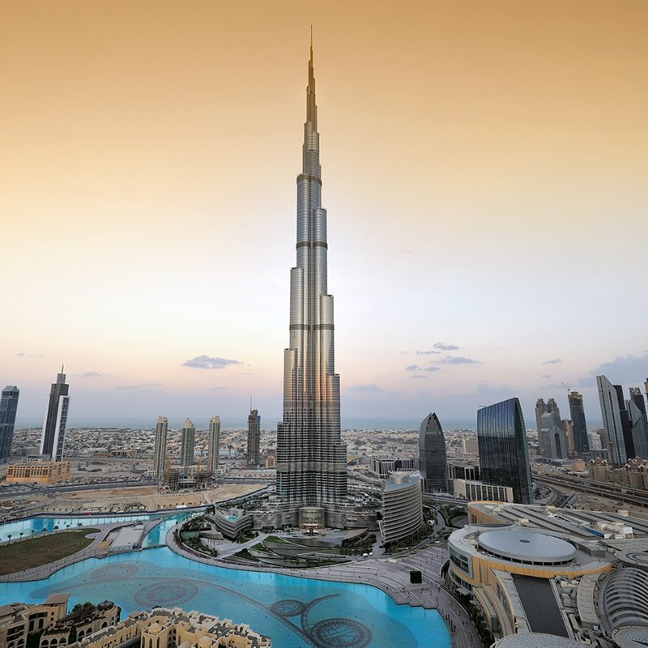
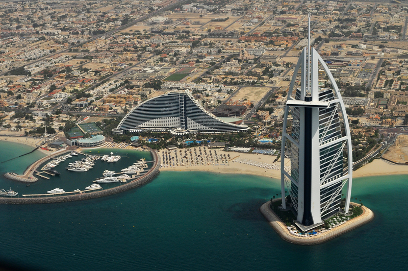
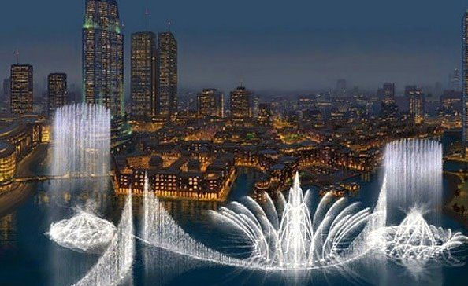

LUGARES MAS IMPORTANTES DE DUBAI
| NOMBRE | DESCRIBCION | IMAGEN |
|---|
| BURJ KHALIFA |
El Burj Khalifa es un rascacielos ubicado en Dubái. Con 828 metros de altura, es la estructura más alta de la que se tiene registro en la historia.Conocido durante su construcción como Burj Dubái, el Burj Khalifa es la parte central de un desarrollo más complejo conocido en inglés como Downtown Dubai, un complejo de 2 km² situado junto a la avenida Jeque Zayed, que atraviesa transversalmente la ciudad de Dubái. La construcción comenzó el 6 de enero de 2004, siendo su inauguración oficial el 4 de enero de 2010. Debe su nombre al Jeque y presidente de los Emiratos Árabes Unidos, Jalifa bin Zayed Al Nahayan.Fuente:https://es.wikipedia.org/wiki/Burj_Khalifa |
 |
| BURJ AL ARAB |
Conocido como el único hotel de 7 estrellas del mundo, como el hotel vela construido sobre una isla artificial o como uno de los símbolos de Dubai, el Burj Al Arab es una de las construcciones más sorprendentes del mundo. Todos conocemos las fotos de este lugar, pero visitar por dentro el Burj Al Arab hay que pagar. Las únicas formas son siendo huésped o teniendo una reserva en alguno de sus restaurantesFuente:https://www.mundukos.com/guias/dubai/como-es-el-burj-al-arab-de-dubai-por-dentro/#:~:text=Burj%20Al%20Arab.-,Datos%20curiosos%20del%20Burj%20Al%20Arab,a%C3%B1os%3A%20de%201994%20a%201999.&text=El%20Burj%20Al%20Arab%20tiene,grande%20cubre%20780%20metros%20cuadrados.&text=Tiene%209%20restaurantes%20abiertos%20a,Burj%20Al%20Arab%20clic%20aqu%C3%AD. |
 |
| FUENTE DE DUBAI |
La Fuente de Dubái es un sistema de fuentes con una coreografía continua y es oficialmente la fuente danzante más grande del planeta Tierra. Está situada en el lago artificial del Burj Khalifa, en el centro del Downtown Burj Khalifa en Dubái, Emiratos Árabes Unidos. Fue diseñado por WET Design, la compañía con sede en California responsable de las fuentes del lago del Hotel Bellagio de Las Vegas. Iluminados por 6.600 luces de colores y 25 proyectores, que es de 275 m de largo y brotes de agua de 150 m en el aire, acompañados por una serie que va de lo clásico a lo contemporáneo con un estilo único árabe y música del mundo. Fue construido a un costo de AED 800 millones. El nombre de la fuente fue elegido tras un concurso organizado por el desarrollador de Emaar Properties, cuyo resultado fue anunciado el 26 de octubre de 2008. Fuente:https://es.wikipedia.org/wiki/Fuente_de_Dub%C3%A1i |
 |